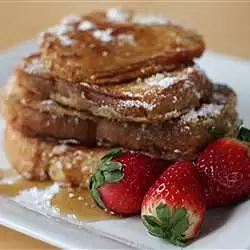

French Toast

Description
This is a dairy-free, rich and hearty version of French toast that is vegan. It uses coconut milk instead of eggs and milk.
If you like sweet French toast, cover in Earth Balance, powdered sugar, and pure maple syrup. If you like a more savory French toast, cover in Earth Balance, a touch of powdered sugar, and some nutritional yeast.
Ingredients
- 1 (13 ounce) can unsweetened coconut milk
- 1 cup soy milk
- 3 tablespoons garbanzo bean flour
- 1 tablespoon cornstarch
- 1 loaf day-old Italian bread, cut into 1 to 1 1/2-inch slices
- 2 tablespoons olive oil, or more as needed
Steps
- Empty coconut milk into a medium bowl. Whisk until well emulsified. Add soy milk, garbanzo bean flour, and cornstarch and stir until the ingredients have blended together. Empty the mixture into a glass baking dish large enough for all of the bread pieces to fit.
- Dunk the bread in the mixture, making sure all pieces are well covered with the mixture. Cover with plastic wrap and place into the refrigerator, 8 hours to overnight.
- Heat 2 tablespoons olive oil in a large, flat saute pan or griddle over medium heat for 2 to 3 minutes. Add slices of French toast, working in batches if needed, and cook until golden brown, about 10 minutes. Flip and cook the other side for 10 minutes more. Increase heat to medium-high and flip again; cook until nicely browned, about 5 minutes more per side.